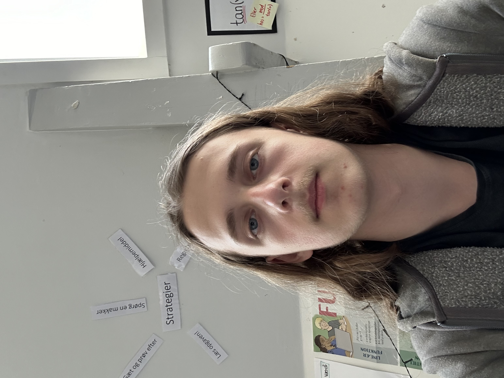

Dette er et projekt, jeg arbejder på alene. Jeg synes, der mangler objektiv og ufarvet information på internettet. Det er tit svært at finde viden, som ikke er påvirket af personen, der har skrevet det. Derfor vil jeg lave denne side for at løse det problem.
Mit mål er at skabe et sted, hvor man kan finde information, som er så neutral som muligt. På den måde behøver man ikke bekymre sig om, at det er farvet af forfatterens egne meninger eller holdninger. Det er vigtigt for mig, at folk kan få adgang til fakta uden skjulte agendaer.
Jeg håber, I vil støtte mig på denne rejse. Jeres opbakning betyder meget, og det vil give mig motivation til at fortsætte med at arbejde på og forbedre denne side. Mange tak på forhånd for jeres støtte.
